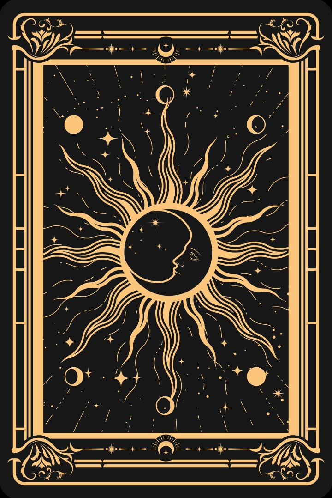

✦
✧
✦
☽
✧
心灵塔罗牌
触碰灵珠，开启命运之门
✦ 开启占卜仪式 ✦
点击后将请求摄像头权限以识别手势
✦
正在唤醒塔罗牌灵…
初始化中
✦ 在开始之前 ✦
塔罗牌回应的是你内心的声音。
请闭上眼睛，在心中默念你最想问的问题。
问题越具体，牌的指引越清晰。
例如：我该不该换工作？· 这段感情的走向？· 下一步该怎么走？
🙏 我已默念完毕，开始占卜
✊
握拳开始仪式
塔罗占卜
过去
现在
未来
☀
☽
★
★

🖐️ 张开手掌释放卡牌
命运的轨迹已然显现
星辰与卡牌的共鸣
✦
综合解读
◇
行动指引
重新占卜
🔍 调试面板
✕
手势:
无
状态:
idle
手数:
0
FPS:
0
置信度:
0
🔍
🪞